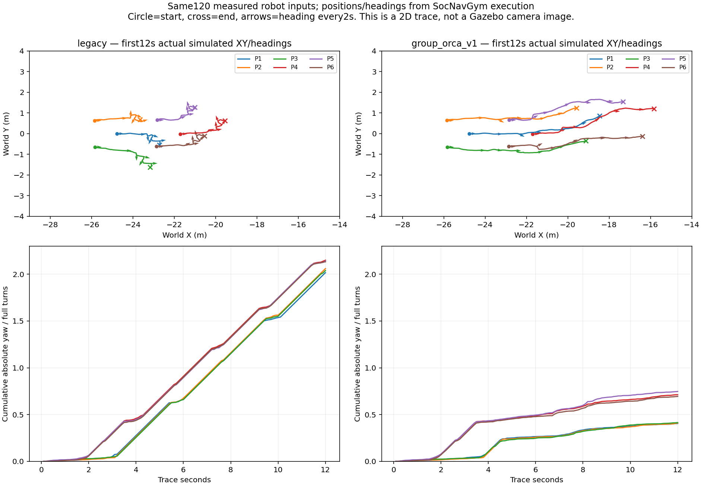
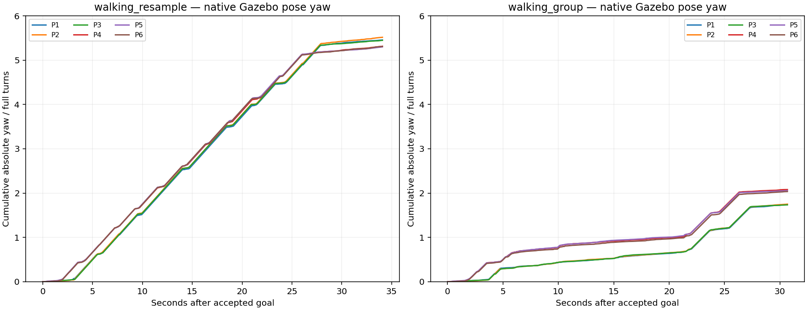
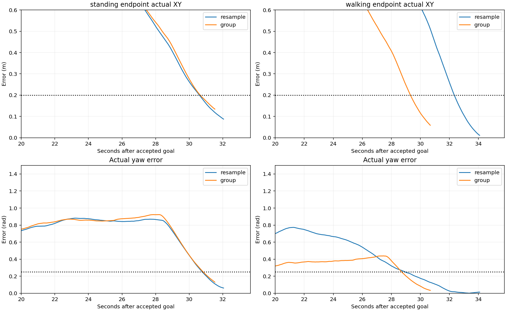

Nhóm người quay liên tục: kiểm tra và thử sửa
Đối chiếu từ log mô phỏng thực thi. Chưa đổi cấu hình ROS/Nav2 mặc định.
Điều đã xác nhận
Ở lượt walking_h5 trước, mỗi người tích lũy khoảng 9,8–10,1 vòng quay/51 giây. Vị trí XY cũng đi vòng; đây là hành vi mô phỏng, không chỉ lỗi tay/chân hoặc video.
Bản thử dùng vòng bao nhóm theo vị trí thành viên thực tế (ban đầu 1,08 m thay cho 1,44 m) và đưa vận tốc nhóm hiện tại vào ORCA ở mỗi bước. Giới hạn quay, mục tiêu và kiểm tra va chạm từng người vẫn giữ nguyên.
Cùng 120 đầu vào robot/12 giây: tổng góc quay giảm 73,0%. Sai số tái hiện log cũ = 0.
Đây là adapter SocNavGym tùy chỉnh group_orca_v1. Giảm quay chưa đồng nghĩa đã đạt hành vi người tự nhiên hay đủ điều kiện thu dataset.
Xem chuyển động trước/sau với cùng đầu vào robot
Minh họa 2D từ từng vị trí và hướng mô phỏng; chấm tròn là người, vạch chỉ hướng nhìn. Hai ô cùng thang đo. P1–P3 một nhóm, P4–P6 một nhóm.
0,1 sTrước: legacy
Sau: group_orca_v1
Quỹ đạo và lượng quay tích lũy

Cả hai nhóm tiến xa hơn; bán kính xa nhất từ tâm tới thành viên giảm từ 1,27 m xuống 1,11 m trong đoạn này. Nhóm vẫn có động tác tránh nhau và đổi hướng; chưa đánh giá nhiều seed.
Chạy thật trong Gazebo với robot tự điều hướng
4/4 lượt đã tới đích, không cần recovery, audit PASS trên RTX4060. Bảng và video ở dưới.
Tốc độ video:
Góc quay từ pose thực tế của Gazebo

Hội tụ robot gần đích

Chưa đổi mặc định hoặc nghiệm thu thu dữ liệu. Cần kiểm tra nhiều seed và gặp người gần robot hơn.
Video lấy từ RGB observer của Gazebo (camera1Hz), mặc định phát theo thời gian mô phỏng; đây là ảnh đã ghi, không dùng AI sinh ảnh. Dáng đi trong replay cửa sổ riêng được dựng từ quãng đường, không phải bộ xương đã ghi.
Giới hạn và bước tiếp
Chỉ một seed45, không cố định RNG của MPPI. Mô hình người gốc còn dùng đồng hồ máy cho thời hạn đổi mục tiêu; chưa nghiệm thu tính lặp lại ở nhiều tốc độ mô phỏng. Cần xem toàn lượt, độ gắn kết nhóm và phản ứng với robot trước khi chốt mô hình sinh dữ liệu.
Bốn lượt nhà xưởng trước · Sáu lượt kiểm tra khe hẹp · Trang kết quả chính